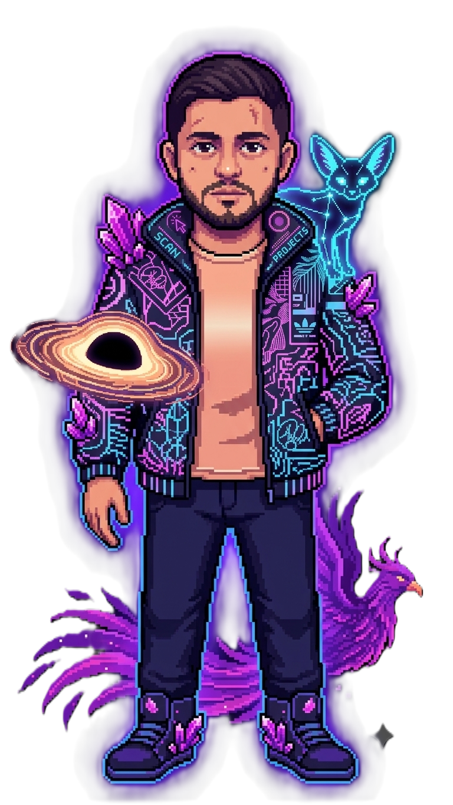

COSMIC_EXPLORER.PROFILE
Alejo Gomez Serrato
Bilingual physicist and full-stack developer focused on data science, scientific machine learning, generative AI, and software that turns mathematical models into usable tools.
My orbit mixes AI agents, development, science, astronomy, books, improvisation, creating strange interfaces, and learning how complex systems behave when they become interactive.
